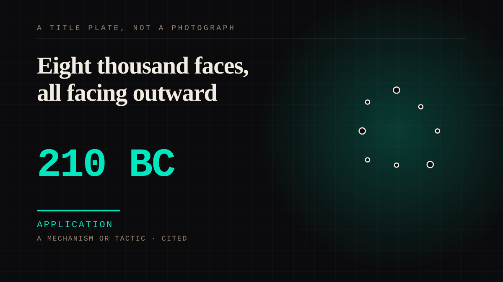

A mechanism or tactic · 210 BC · Antiquity
Eight thousand faces, all facing outward
Eight thousand life-size soldiers, each with a face and ears no other has, buried in battle order facing the enemy with the emperor behind them - made from the likenesses of real men so the substitute army would stand where the real one could not.

This site's structure with the arrow turned round. Everywhere else here, one person attaches to another who cannot answer. Here eight thousand specific likenesses were manufactured so that a single man would never be without an army, and every figure faces away from him. The 2022 analysis in npj Heritage Science found the features highly resemble those of contemporary Chinese people and concluded the figures were crafted from real portraits and intended to constitute a real army to protect the emperor in the afterlife, as if he was alive, the artificial army being the substitution of his real one. A substituted army of individuals, each one somebody, each one distinct enough to be identified by ear. That is more intimate than anything the twentieth century built and nobody chose it. The cost belongs in the entry rather than in a footnote to it: young women of the court were buried with him, some apparently dismembered and laid outside the passageways, and reconstructions have since been made of two of their faces. An entry about eight thousand distinct faces should not be allowed to be charming.
Application. One-sided attachment put to work on purpose. Creator economies, community, fandom as infrastructure, and the things that genuinely help people. Not automatically good - a tool with an obvious use is a tool that will also get a bad one.
Manipulation. One-sided attachment engineered for somebody else's benefit. Paid intimacy, parasocial persuasion, sasaeng, grief extraction, the streak. The lane that pays the bills and the lane that causes the most harm, frequently at the same time.
Where it sits
3000 BC Before 0 · 210 BC 1 BC
Provenance · 3 source record(s)
- retrievableThe finding the entry rests on: facial features highly resemble those of contemporary Chinese people, indicating that the figures were crafted from real portraits and intended to constitute a real army to protect the emperor in the afterlife, as if he was alive, the constructed army being more likely the substitution of his real army. Quantitative 3D point-cloud and anthropometric work found the scatter of measured features random, no two identical, each figure having distinct features which seem like real humans. Notes that it was still debated whether the figures were based on individual people or standardised models.Measurement and analysis of facial features of terracotta warriors based on high-precision 3D point clouds. npj Heritage Science, 10, 2022. DOI: 10.1038/s40494-022-00662-0 ↗
- retrievableNumber, disposition and intention: 8,099 life-size figures of warriors and horses, buried with the first emperor in 210-209 BCE; all 8,099 soldiers are unique and distinguishable with different height and facial features; each figure's head appears to be unique, showing a variety of facial features, expressions and hair styles. The army was built facing enemy territory, between those enemies and the emperor's tomb, and was created in the belief that it would protect him after his death.Qin Mausoleum and Terra Cotta Army. Exploring Chinese History: Culture, Archaeology, ibiblio. ↗
- unverifiedThe cost the entry carries: young women from the emperor's court who had not borne children were buried with him, some historians believing they were buried alive; the dismembered body of a woman of about twenty was found among around a hundred tombs, with bodies dismembered and placed outside passageways leading to the burial chambers. Chinese researchers have since reconstructed the faces of a young woman and a young man from these tombs. Publisher returns 403 to an unauthenticated request.Chen, S. (2018, July 13). Could these be the faces of the murdered wife and son of China's first emperor Qin Shi Huang? South China Morning Post. ↗
Connected · 4 out, 1 in
It sits in